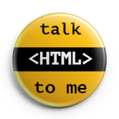
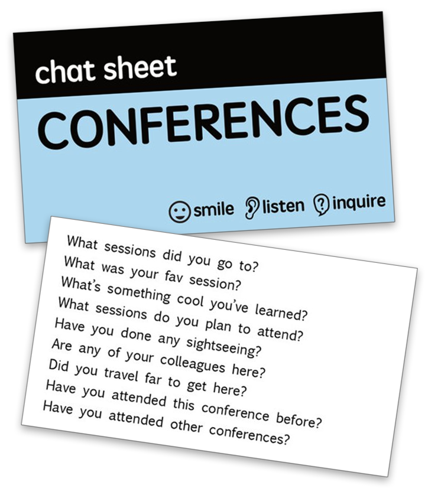

Project Icebreak
Tips for Event Attendees

Attending a meetup or conference in the future? Nervous about how you'll meet people and what you'll say to them?
Here are my personal tricks for overcoming social anxiety and connecting with people at events:
Be a Speaker
I start with this tip not because it's the easiest, but because it can be very effective. Personally, I only attend conferences where I'm a speaker, because of how much it eases the social situation for me. Why? Well, after I deliver a talk to a group of people, there will be a whole room of people afterwards who know who I am and even better, who know what conversation topics they can approach me with. Speaking isn't easy-I still get sick to my stomach just before I talk-but for me, it's worth it.
If you're nervous about speaking in front of a big audience, start small: give a lightning talk or lead a BOF (Birds-of-Feather) session. That's still a group of people that now know who you are!
If you're speaking, always ask for an early slot- early in the week if it's a multi-day conference or before lunch if it's one day. That way, there are more people that know you as soon as possible, and you can spend the rest of the time hopefully being approached by them with their thoughts on your talk.
Talk to Speakers
In some ways, approaching a speaker can be more intimidating if it feels like talking up a celebrity, but in other ways, approaching a speaker is easier because you already have a shared discussion topic. Plus, the speakers at a conference generally expect attendees to ask them questions, and some of them (like me) might even be speaking specifically so that attendees *will* speak to them.
Keep a running notepad (virtual or physical) with questions that come to your mind during a talk. Ask one of them during the formal Q&A (whatever's most relevant to the audience), so that the speaker has seen your interest. Then save the rest as an excuse to approach the speaker after the talk. Much of the time, the speaker is more than happy to answer interesting questions, and loves that somebody is interested enough to ask. Don't dominate their time if there's a line of eager attendees behind you, just chat enough so that they'll remember you if you run into them later, like during a meal or networking event.
Go to Workshops
Traditional presentations are not very conducive to social interactions. It's a bunch of people watching a speaker, and the only opportunities to talk to each other are right before and after. A workshop, however, is inherently more interactive: there's many a time at which you'll be working on an exercise, and that's a time at which you can talk to the people near you about what you're working on. If you want to be very popular, then try to be the one that pays a lot of attention and can help out everyone else. Otherwise, don't be afraid to ask for help. Just not *too* much.
Be a Conversation Piece
This is a trick that works anywhere in life - parties, cafes, dinners. If you make it so that some aspect of your physical presence provokes conversation ideas, then people will have an obvious and immediate excuse to talk to you.
That's often in the form of a t-shirt, like a geeky one, a joke, or an awesome band, but it can also be in the form of a crazy hat or accessory, like brightly colored hair or super cute animal socks. It can even be stickers on your laptop or buttons on your lanyard (like the Talk to Me buttons).
Prepare Conversation Topics
Sometimes it feels like the world expects humans to know what to say and ask in any situation in real-time. Well, I don't, and I bet a lot of other humans don't either - and when I don't know, I sometimes freeze and get out of the social situation, instead of fumbling my way through conversation. So I've learned to prepare conversation topics ahead of time, particular to the upcoming social situation.
You can write those topics on a piece of paper, jot notes on your head, or rehearse a few ahead of time. They can be very simple, like "What other conferences have you been to?", but even having a few simple conversation starters is surprisingly superior to none at all. To see my own topics for conferences and meetups, check out my Chat Sheets.